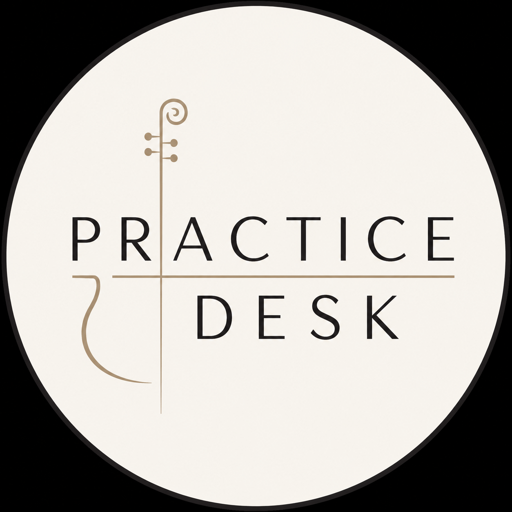

Practise with direction.
Send your playing. Receive expert written feedback, clear priorities and a personalised plan for what to practise next.
Submit your playingThree simple steps.
Record
Record up to 10 minutes of your cello playing on your phone or camera.
Submit
Send your video and tell Practice Desk what you’re working on or worried about.
Receive
Get a personalised written Practice Report with feedback and practical next steps.
Not just comments. A plan.
Know what is working, what needs attention, and exactly where to put your practice time next.
Every review is tailored to the recording you submit. Feedback focuses on the areas most relevant to your playing rather than forcing every performance through the same checklist.
- Overall performance assessment
- Technique, sound and intonation feedback
- Musical and stylistic observations
- 3–5 prioritised areas to work on
- Specific practice suggestions and exercises
- A personalised practice plan
- Clear goals for your next recording
A second pair of expert ears.
Practice Desk is designed for cellists who want focused, independent feedback — whether you’re learning for enjoyment, returning to the instrument, working towards an exam or performance, or simply wondering what to focus on next.
Cello Performance Review
Submit up to 10 minutes of playing and receive your personalised Practice Desk Report within 5 days.
You can also tell us what you most want help with.
One recording · up to 10 minutes
Personalised written report
Practice priorities + next steps
Expertise without the scheduling.
Practice Desk reviews are provided by a UK-based professional orchestral cellist and international award-winning conservatoire graduate.
The service is designed to give musicians thoughtful, specific feedback without requiring a live lesson — so you can record when it suits you, absorb the feedback in your own time, and return to it throughout your practice.
Good to know.
Do I need to be an advanced cellist?
Not at all. Practice Desk is for cellists at a wide range of levels. You might be returning to the instrument, preparing for an exam or performance, or simply looking for some expert direction in your practice. Your feedback is tailored to your playing and what you want to achieve.
What can I submit?
Solo repertoire, orchestral excerpts, audition material, exam pieces or passages you are currently working on.
Does this replace my regular teacher?
It doesn’t have to. Practice Desk can work as a second professional opinion or focused check-in alongside regular lessons.
Will my video be shared publicly?
No. Your submission is for assessment only unless you separately give explicit permission for another use.
How quickly will I receive my report?
Version 1 is planned around delivery within 5 days of a complete submission.